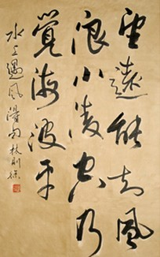

Related pictures
-


- 
father: Lin bin day
mother: Chen Xun
wife: Zheng shuqing
eldest son: Lin ruzhou (born 1814)
second son: Lin congyi (born in 1824)
third son: Lin gongshu (born in 1827)
brother: Lin minghe
younger brother: Lin peilin
eight sisters